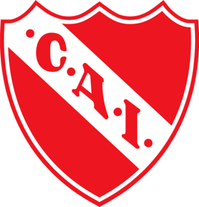

Nacionalidad: Colombiana
Fecha de Nacimiento: 12/06/1966
Fecha de Fallecimiento: 11/02/2004
Poscicion: Delantero
Dorsal: N°9
Altura: 1,92 m
Distinciones individuales: Equipo ideal de America 1994
Partidos Jugados: 63
Goles: 20
Jugó entre 1994 y 1997
Titulos: Clausura 1994, Supercopa 1994
CONTACTO
